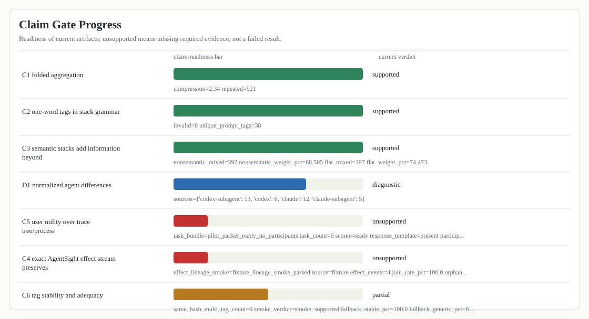
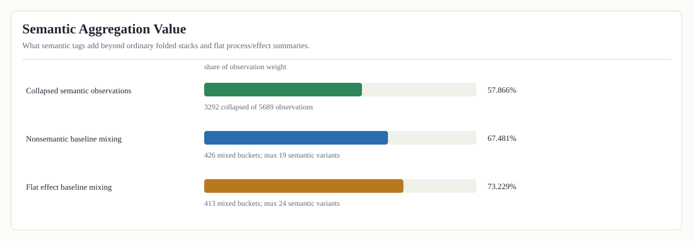
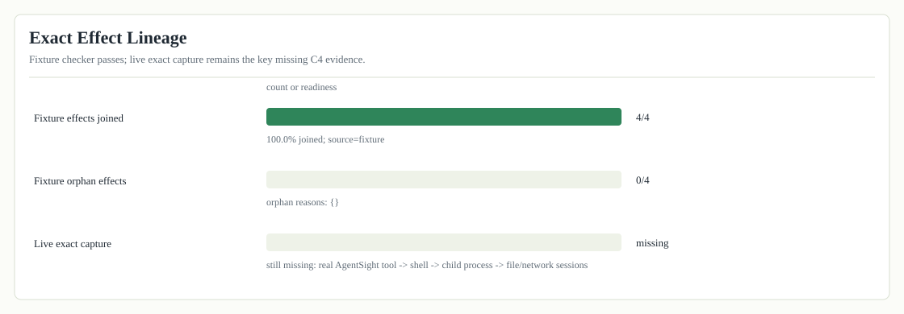

AgentSight Visual Progress Summary
These charts summarize current artifact state. They do not replace the full semantic flamegraph report or the planned live-capture and user-study runs.
Full report: index.html. Artifact audit: evaluation-summary.md.
Claim Gate Progress

Semantic Aggregation Value

Exact Effect Lineage

System Footprint Flamegraph

Session System Footprint

Prompt System Footprint

Token Footprint Flamegraph

Session Token Footprint

Prompt Token Footprint

LLM-Call Token Footprint